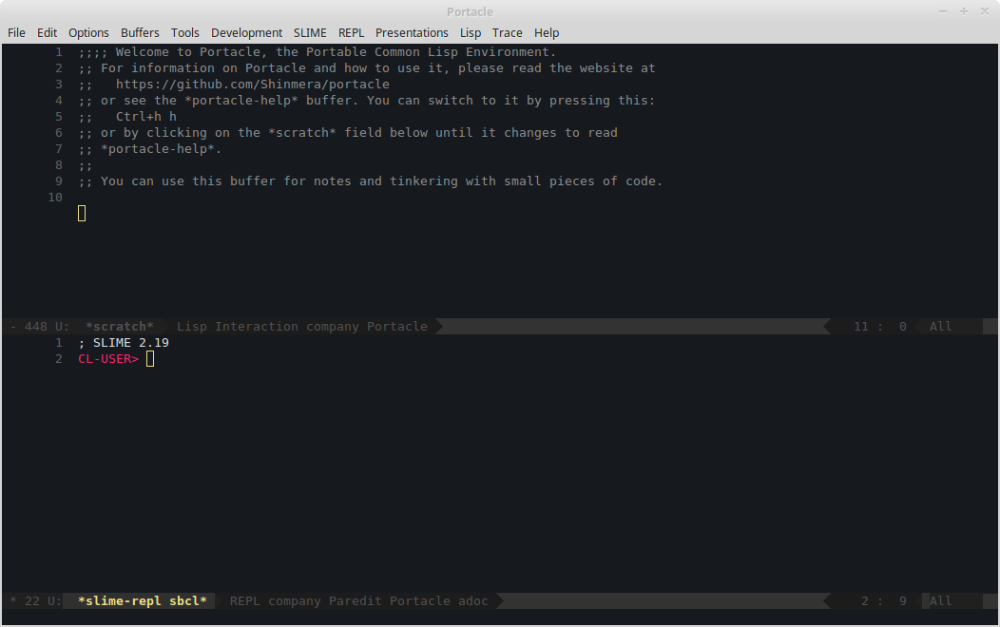
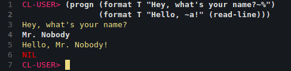
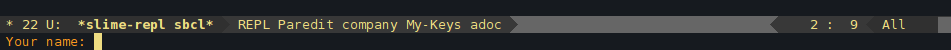

What This Is

Portacle is a complete IDE for Common Lisp that you can take with you on a USB stick. It is multi-platform and can be run on Windows, OS X, and Linux. Since it does not require any complicated installation process, it is set up and running in no time.
It lends itself very well both to absolute beginners of Lisp that just need a good starting point, as well as advanced users that want to minimise the time spent getting everything ready.
The following software packages are included in Portacle:
Emacs
Emacs is a very flexible and extensible editor that has been around for a long time. Due to its history and huge community, it is capable of covering pretty much any area of programming and more.
Bundled with Emacs are some very useful packages, the major ones being Slime, Magit, and Company.
SBCL
SBCL is one of the fastest and most capable Lisp implementations available today.
Quicklisp
Quicklisp is the standard Lisp package manager that allows you to retrieve and manage over a thousand libraries with a few keystrokes.
Git
Git is perhaps the most widely used version control system today. It allows you to manage changes in code over small and large projects fast and efficiently.
How to Get It
Portacle is rather straight-forward to setup and use. All you need to do is extract an archive. After that, you can freely move its installation folder around and even take it with you on a memory stick.
If you are new to Emacs, Lisp, or both, you should also read the section after this one once you successfully completed the installation.
Windows
Download the latest release and run it. It will ask you where to install it to, defaulting to your home folder. Note that you do not need to append portacle to the end of the path. After extraction, you can launch it by double-clicking the portacle.exe.
Note that portacle.exe is tied to the portacle directory and needs everything within it to function properly. You can however create a shortcut to the exe to reach it more easily from your desktop.
Mac OS X
Download the latest release and extract it. Due to "security" reasons on OS X you must then move the Portacle.app within the extracted directory into another directory like projects/ and back again using Finder. From then on you can launch it by double-clicking the Portacle.app.
Note that you cannot copy the Portacle.app outside of the portacle directory. You must take the whole directory with you. You can however drag the app into your dock.
Linux
Download the latest release and extract it. You can then launch it by double-clicking portacle.desktop. The file may also be presented to you as just Portacle.
Note that you cannot move or copy portacle.desktop elsewhere. It has to reside in the portacle directory for it to work.
Using It
Upon launch it might fizzle around for a few seconds and then present you with a window that looks something like this:

The window should be divided up into two regions, each of which display something called a buffer. One of the buffers, the one displaying CL-USER>, is the Lisp prompt. The other is the scratch buffer and should also contain some hints on how to reach a reference guide.
As a quick test, click inside the Lisp prompt buffer, and type in the following snippet:
(progn (format T "Hey, what's your name?~%")
(format T "Hello, ~a!" (read-line)))
You will notice that it automatically inserts closing parens and the end of the quote for you. To run it, move the cursor to the end by either clicking or using the arrow keys, and hit your ⏎ key.

Congratulations! You just ran your first program in Portacle.
You should probably also configure Portacle's default settings. To do this, press Alt+X, then type portacle-configure followed by ⏎. You should then see a prompt at the bottom of the window, in an area called the "minibuffer".

Once you've answered all the questions, Portacle should be set and ready to go. Make sure to read the help document. It should explain all the basic terminology and commands on how to use the editor. To access it, press Ctrl+H H.